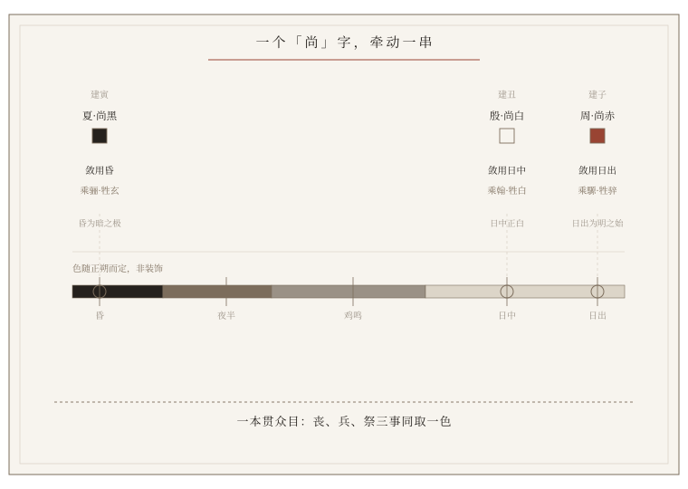

檀弓上 · 三·十二 · 第 215 课
夏后氏尚黑，大事敛用昏，戎事乘骊，牲用玄；殷人尚白，大事敛用日中，戎事乘翰，牲用白；周人尚赤，大事敛用日出，戎事乘騵，牲用骍。注「以建寅之月为正，物生色黑」「此大事谓丧事也」。
说什么事：三代各尚一色，连出丧的时刻都随色而定。
落在哪一层：礼，兼及礼制与礼意。论正朔、服色、时刻、牲色四者的一贯。
为何编在此位：上节论器之层累，此节论色之更替。一器一色，皆是一代之「本」。
【经】夏后氏尚黑，大事斂用昏，戎事乘驪，牲用玄。殷人尚白，大事斂用日中，戎事乘翰，牲用白。周人尚赤，大事斂用日出，戎事乘騵，牲用騂。
【注】夏后氏尚黑，以建寅之月為正，物生色黑。大事斂用昏，昏時亦黑；此大事謂喪事也。戎事乘驪，戎，兵也；馬黑色曰驪，《爾雅》曰「騋，牝驪，牡玄」。牡用玄，玄，黑類也。殷人尚白，以建丑之月為正，物牙色白。大事斂用日中，日中時亦白。戎事乘翰，翰，白色馬也，《易》曰「白馬翰如」。牲用白。周人尚赤，以建子之月為正，物萌色赤。大事斂用日出，日出時亦赤。戎事乘騵，騵，騮馬，白腹。牲用騂，騂，赤類。
【疏】此一节论三代正朔所尚色不同。夏尚黑、殷尚白、周尚赤，故《书传略说》云「天有茸艹，物有三变，故正色有三」；又《春秋纬·元命苞》及《乐纬·稽耀嘉》云「夏以十三月为正，息卦受泰」，注「物之始，其色尚黑，以寅为朔」；「殷以十二月为正，息卦受泰」，注「物之牙，其色尚白，以鸡鸣为朔」；「周以十一月为正，息卦受复，其色尚赤，以夜半为朔」；又《三正记》云「正朔三而改，文质再而复」。建子之月为正者谓之天统，以天之阳气始生、为百物得阳气微稍动变；建丑之月为地统者，以其物已吐牙，不为天气始动，物又未出，不得为人所施功，唯在地中含养萌牙；建寅之月为人统者，以其物出于地，人功当须修理。统者，本也，谓天地人之本也。所尚既异，符命亦随所尚而来，故《礼纬·稽命征》云「其天命以黑，故夏有玄珪；天命以赤，故周有赤雀衔书；天命以白，故殷有白狼衔钩」。注「昏时至事也」：知「大事」是丧事者，以其与「敛」文连。注「物萌色赤」：上「殷尚白」注云「物牙色白」，此「萌色赤」不同者，萌是牙之微细，故建子云萌、建丑云牙；若散而言之，萌即牙也，故《书传略说》云「周以至动，殷以萌，夏以牙」。注「騵，骝马，白腹」：《尔雅·释畜》文，武王伐纣所乘也，故《诗》云「驷騵彭彭」。
尚 以之为上，崇尚。
正 正朔之正，岁首之月。夏建寅、殷建丑、周建子。
大事 注「此大事谓丧事也」。与「敛」连文，故知。
骊 翰 騵 骊为黑马，翰为白马，騵为骝马而白腹。
玄 白 骍 玄为黑之类，白为纯白，骍为赤之类。
昏 日中 日出 一日之三刻：昏为暗之极，日为中，日出为明之始。
夏后氏崇尚黑色：丧事入敛用黄昏，兵事乘黑马，祭牲用玄色。殷人崇尚白色：入敛用正午，兵事乘白马，祭牲用白色。周人崇尚赤色：入敛用日出，兵事乘赤马，祭牲用赤色。
此节三句一组，句式全同，只换国名、色名、时刻、马名、牲色。这样的排比，是要人看出：一个「尚」字，牵动的是一整串事。色不是装饰，是一代的「本」；本定了，丧的时刻、兵的马、祭的牲都随之而定。郑注以建寅、建丑、建子解之，又引纬书「物生色黑、物牙色白、物萌色赤」——色之所以然，落在万物初生那一刻的样子上。
第一层 三统之说 疏详引三统：建子为天统，阳气始生；建丑为地统，物已吐牙而未出，唯在地中含养；建寅为人统，物出于地，人功可施。统者，「本」也。三代各取一为本，故正朔不同、色亦不同。这是古人给「改朝换代」找的宇宙论依据：不是我要改，是本该如此。
第二层 色贯众事 丧敛用昏/日中/日出，是取与所尚之色相应的时刻；戎事乘骊/翰/騵，是取相应之马；牲用玄/白/骍，是取相应之牲。一色贯穿丧、兵、祭三事。可见礼之统一性：不是一事一法，而是一本贯众目。
第三层 萌、牙、始 注辨析极细：建子云「萌」，建丑云「牙」，建寅云「生」。疏引《书传略说》「周以至动，殷以萌，夏以牙」。三个字，分别写一株草在三个月的状态。古人对物候的观察，精确到可以给月份命名。
第四层 符命随之 疏引《礼纬·稽命征》：夏有玄珪、殷有白狼衔钩、周有赤雀衔书，皆随所尚之色。此说今天看来是纬书之言，但其思路可读：一个朝代信什么，它所见之「天意」也就是什么颜色。
与今日何干 一个组织的「主色」，往往不只是视觉，而是它整套做事的时刻、器具与选择。此节可作提醒：要改一套做法，先看它尚的是什么；只改表面之色，底下那一串不会动。
| 左 | 右 |
|---|---|
| 夏后氏尚黑 | 建寅之月为正，物生色黑 |
| 大事敛用昏 | 昏时亦黑 |
| 戎事乘骊 | 马黑色曰骊 |
| 牲用玄 | 玄，黑之类 |
| 殷人尚白 | 建丑之月为正，物牙色白 |
| 大事敛用日中 | 日中时亦白 |
| 戎事乘翰 | 翰，白色马 |
| 周人尚赤 | 建子之月为正，物萌色赤 |
| 大事敛用日出 | 日出时亦赤 |
| 戎事乘騵 | 骝马白腹 |
| 牲用骍 | 骍，赤之类 |
| 统者，本也 | 天地人三统，各取一为本 |
画一幅三段并置的画面，自左至右三区，各以一道极淡的竖线相隔。左区：一间半掩的丧室，室内光线极暗，只余一盏将尽的灯，地面与器物的边缘几乎融入暗处，色偏黑。中区：同一形制的丧室，光线最盛，正上方日光直落，地面反光强，器物转折清晰，色偏白。右区：同一形制的丧室，光线自地平一线斜入，长影拖向右，色偏赤。三区之内各置一具未盖的棺与一只小牲（左为黑色小牛、中为白色小羊、右为赤色小牛），位置、朝向、尺寸相同。不写文字、不画人。赭色只用在右区那道斜入的光线上。
